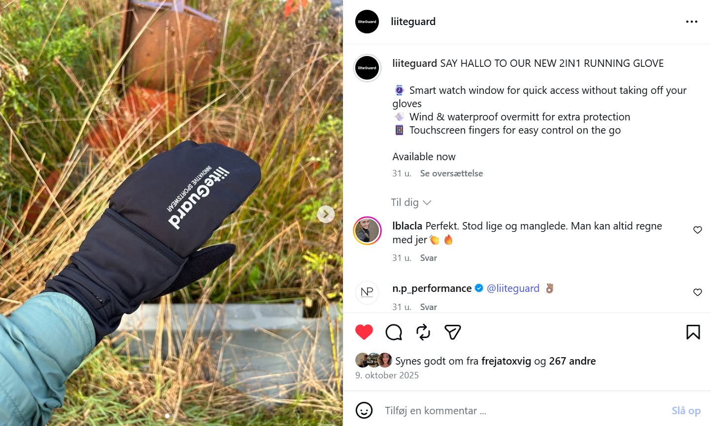
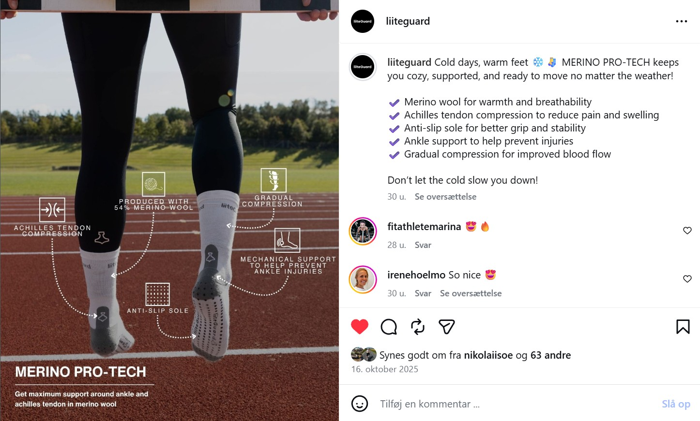
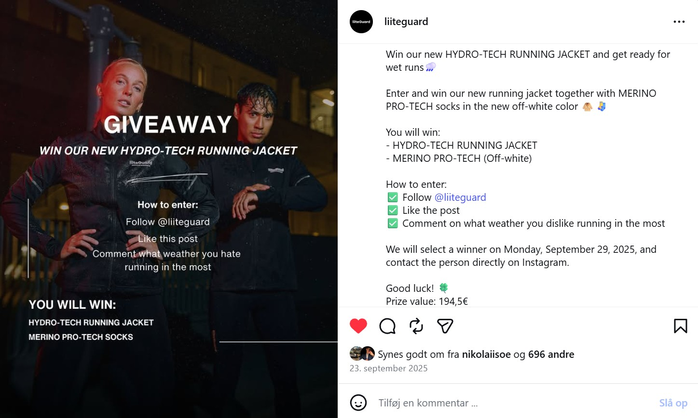

Værktøjer og programmer jeg har brugt i projektet:


SoMe og shortform videos - liiteGuard
Under min praktik hos liiteGuard havde jeg ansvar for at udvikle indhold til virksomhedens Instagram. Her arbejdede jeg med både grafiske opslag, billeder og shortform-videoer med fokus på at skabe engagerende og værdifuldt content til målgruppen.
Jeg designede opslag ved at kombinere billeder, grafiske elementer og tekst, så indholdet både var visuelt interessant og informativt for seeren. I processen havde jeg stor fokus på, at alt indhold fulgte liiteGuards brandmanual, og visuelle principper på Instagram, så der blev skabt et ensartet og genkendeligt udtryk på tværs af platformen.
Derudover planlagde jeg opslagene for forskellige perioder gennem et planlægningsværktøj, hvor jeg arbejdede med struktur, timing og overblik for at sikre en sammenhængende og strategisk contentplan.
Jeg producerede reels og shortform-videoer til Instagram, hvor jeg arbejdede med stærke hooks, hurtig formidling og visuelt dynamisk indhold for at fastholde seerens opmærksomhed. Samtidig havde jeg fokus på, at indholdet stadig skulle være relevant, inspirerende og skabe værdi for målgruppen.
Se et udvalg af opslag og videoer nedenfor
Værktøjer og programmer jeg har brugt i projektet:


